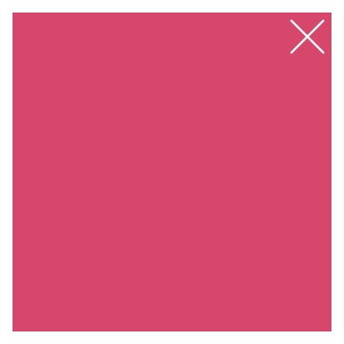
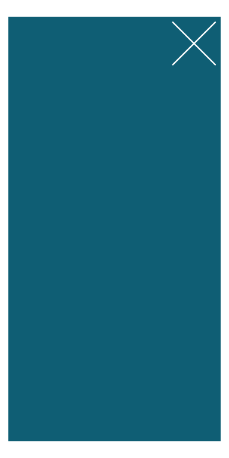
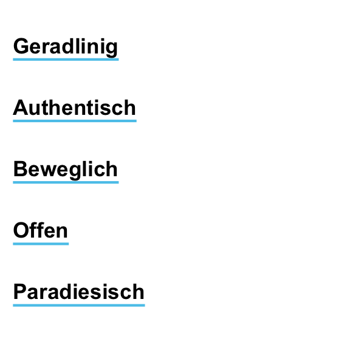
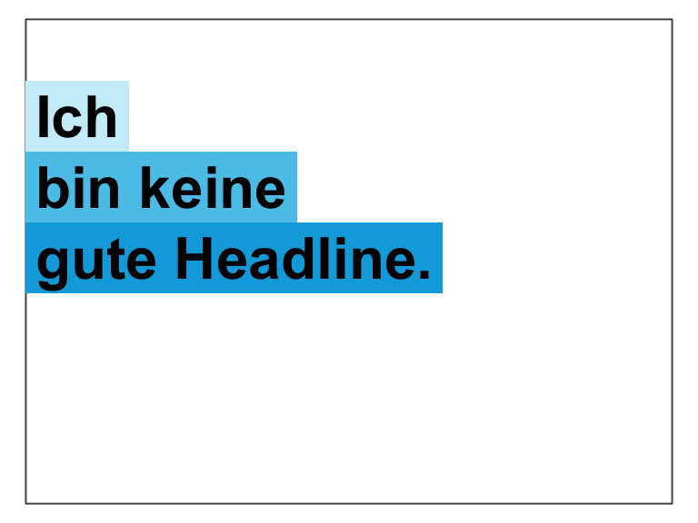

This vignette explains the unikn functions for plotting graphical elements and text decorations. (See the vignette on color for information on colors, color palettes, and corresponding functions.)
Please install and/or load the unikn package to get started:
# install.packages('unikn') # install unikn from CRAN client
library('unikn') # load the packageOverview
Beyond providing support for colors, unikn provides functions for plotting graphical elements (like boxes) and text decorations (with colored backgrounds or underlining). Before illustrating these functions, please note some caveats:
Plotting text (i.e., graphically rendering characters) is rarely a good idea. In contrast to the vector fonts used by DTP programs, plotted text typically does not scale (when changing the size of images) and cannot be recognized automatically (e.g., copied, indexed, or scraped). Hence, the following functions should only be used when no better solutions are available (e.g., for adding text to graphs, or for obstructing automatic text recognition).
Like all other templates, our renderings are subject to constraints and limitations. For instance, as any standard installation of R lacks the prescribed “Theinhardt” fonts, we only mimic the official design specifications (in Arial, sans serif).
That said, digital decorations can be useful to emphasize or structure information, provided that they can be produced easily and flexibly. The unikn package helps preventing common mistakes by novices (e.g., boxes or lines extending beyond text, or step-functions in multi-line headings) and can be customized and improved by expert users. Hence, we hope that the following functions are useful for plotting graphical elements (e.g., boxes, logos, etc.) and help you achieve a uniform look when styling presentations or visualizations.
Please load the unikn package to get started:
library(unikn) # load unikn packagePlotting empty slides and boxes
As the text functions of unikn add styled text to an existing plot, we must first create a plot to which we can add text. unikn provides 2 basic functions for creating new plots:
-
slideplots an empty canvass (or rectangular frame); -
xboxplots a colored box with an X in its top right corner.
Here are both commands with their default settings:
slide() # plot default slide
xbox() # plot default xbox
Both functions accept additional arguments to customize their appearance.
Colors
The background and border colors of slides can be changed by setting their col, border, and lwd arguments:
slide(col = pal_seeblau[[1]], border = Petrol, lwd = 5) # set colors of slide background and border
slide(col = pal_peach[[2]], border = NA) # colored slide without a border
Similarly, the background color of xboxes can be changed by the col argument:
xbox(col = Pinky) # set background color of xbox
Dimensions
By default, both slide and xbox fill the entire plotting region (i.e., all margins are set to 0).
The width of a slide is set to 4/3 of its height (of 1). To change this default, use the dim argument for specifying the slide’s x- and y-dimensions, respectively:
Similarly, an xbox has the default dimensions of a unit square (i.e., dim = c(1, 1)). To change this default, use the dim argument for specifying the xbox’s x- and y-dimensions, respectively:

The 2 strokes of the X (in the top right corner) are orthogonal when viewing the xbox at the aspect ratio indicated by dim (i.e., here: at a ratio of width x = 1 to height y = 2). When viewing the box at any different aspect ratio, the X seems distorted. Hence, viewing and printing plots at the desired aspect ratio is crucial for designing an xbox.
Plotting styled text
There are 3 main functions for plotting text with decorations:
-
markallows highlighting text with colored background boxes; -
ulineallows underlining text with colored lines; -
postallows posting text in rectangularxboxelements.
In addition, there are 2 auxiliary functions:
-
headlineallows plotting headlines with colored background boxes; -
url_uniknallows formatting URLs the uni.kn way.
The following sections illustrate the functions and their main options in turn.
Mark text
The mark function allows highlighting text by plotting it with colored background boxes (to provide the functionality of “Markieren”):

By default, mark assumes that we want to add highlighted text to an already existing plot. The text labels to be added are provided (as a character vector) by the labels argument, their coordinates as the corresponding x and y arguments. Various text decorations (i.e., text and background colors, text sizes, and font types) can be set by specifying additional arguments (i.e., col, col_bg, cex, and font, respectively):
# Some pre-existing plot:
n <- 20
set.seed(1)
par(mar = c(0, 0, 0, 0))
plot(x = runif(n), y = runif(n), type = "p", pch = 16, cex = 20, col = grey(0, .2),
axes = FALSE, xlab = "", ylab = "")
# Add 1 marked label:
mark(labels = "Some messy plot", x = .02, y = .9)
# Add 2 more marked labels:
mark(labels = c("Note something here", "More highlighting here"),
x = c(.1, .6), y = c(.2, .4),
col_bg = c(pal_seeblau[[2]], pal_peach[[3]]), cex = 1.2)
If no pre-existing plot is available, setting the new_plot argument to either "blank" or "slide" will generate a new default plot (by using the slide function described above):
# A sentence to plot:
s <- c("Markieren",
"ist ein Bestandteil",
"von Studieren.")
# Create a new plot (of type "slide"):
mark(labels = s,
x = 0, y = .85, y_layout = .03,
col_bg = Seeblau,
cex = 1.5,
new_plot = "slide")
# Add text to the same plot:
mark(labels = s,
x = 0, y = .40, y_layout = .03,
col_bg = pal_pinky[[2]],
cex = 1.5,
new_plot = "none")
Instead of providing explicit x and y coordinates for all text elements in labels, the calls above defined an initial coordinate and used a numeric y_layout argument to fix the distance between consecutive text labels (to a value of .03). Special values for y_layout are:
-
y_layout = "even"for an even distribution of labels across the available y-space, and -
y_layout = "flush"to omit space between adjacent labels (as iny_layout = 0).
See ?mark for details.
Underline text
The uline function allows emphasizing text by plotting it with colored underlining (to provide the functionality of “Unterstreichen”):

As with mark above, the uline command distinguishes between creating a new plot (by setting new_plot to either "blank" or “slide”) or adding to a pre-existing plot (by using the default new_plot = "none"):
lbl_uline <- c("This is neat, true, and terribly important")
uline(labels = lbl_uline, new_plot = "blank", y = .6, cex = 1.1) # create a new plot
uline(labels = "(which is why we underline it).", y = .45, cex = 1) # add to plot
The arguments for text elements (labels), text positions (x, y, y_layout), and text properties and decorations (col, col_bg, cex, and font) work as they do for mark. For instance, shorter vectors are recycled to match the length of labels:
slogan <- c("Geradlinig", "Farbenfroh", "Beweglich", "Bunt", "Paradiesisch")
uline(labels = slogan,
x = c(0, .5), y = .9, y_layout = "even",
col = c("black", Bordeaux), col_bg = c(Seeblau, Seegruen),
cex = 1.1, font = 2, new_plot = "blank")
Post text
The post function allows adding text to a rectangular xbox (to provide the functionality of “Merken”):

By default, post assumes a pre-existing xbox to which the text elements of labels are to be added.
For square boxes, setting new_plot to "xbox" creates a new xbox with its default dimensions of dim = c(1, 1).
By adjusting its color and text arguments, post allows creating simple badges or logos:
# Badge (to view as 250 x 250 pixel):
post(labels = "ToDo", y = .35,
col = "white", col_bg = pal_signal[[1]],
cex = 3, font = 2, new_plot = "xbox")
# Badge (to view as 250 x 250 pixel):
post(labels = "R", y = .35,
col = "white", col_bg = pal_seeblau[[5]],
cex = 8, font = 2, new_plot = "xbox")

Another use of post is to create an image that provides contact details:
address <- c("Dr. B. F. Skinner", " ",
"Department of Psychology",
"Office F101",
"Tel.: +49 7531 88-0815",
"Fax: +49 7531 88-0810",
"b.f.skin@uni-konstanz.de")
post(labels = "Contact",
y = .7,
cex = 1.2, font = 2,
col_bg = Petrol,
new_plot = "xbox") # create new plot
post(labels = address,
y = .5, y_layout = .03,
new_plot = "none") # add to plot
Headings
The heading function makes it easy to create recognizable headings:

By default, the function creates a new slide (i.e., new_plot = "slide") and positions the text elements of labels on its left edge (i.e., x = 0, y = .8 and y_layout = "flush"). Headings violating the recommendations (see p. 25 of the CD manual) will generate a message, for instance:
# Beware of step-wise arrangements:
heading(labels = c("Ich", "bin keine", "gute Headline."))
#> Step-wise titles are discouraged: Consider re-arranging?

When colors are left unspecified, heading selects colors that are appropriate for the number of elements in labels (i.e., shades of Seeblau for col_bg = "default"). However, default colors can be overwritten by setting the col and col_bg arguments:
heading(labels = c("Ene,", "mene, miste,", "es rappelt", "in der Kiste."),
col = "white", col_bg = c(Pinky, Seegruen, Bordeaux, Karpfenblau))
URLs
One of the more obscure rules (on p. 31 of the CD manual) concerns the rendering of URLs, in which typical web patterns (like “http” or “www”) are to be omitted and replaced by a typographical dash (which is longer than a hyphen). The url_unikn utility function allows formatting URLs the uni.kn way:
my_url <- url_unikn("https://www.uni-konstanz.de/") # input URL as copied from web browser
my_url # formatted URL
#> [1] "‒ uni-konstanz.de"
# Put URL at bottom of an xbox:
post(labels = my_url, x = .05, y = .1, font = 4,
col_bg = pal_seeblau[[5]], new_plot = "xbox")